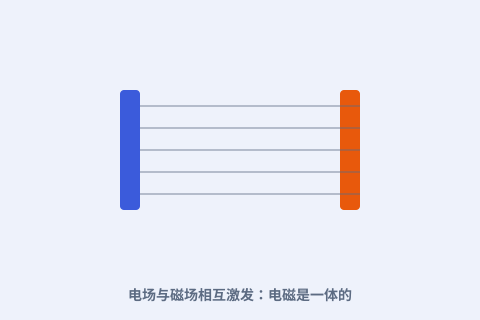

一、三股力量先到齐
在麦克斯韦之前，库仑说清了电荷间的力，安培说清了电流产生磁场，法拉第说清了变化的磁场产生电场。但它们各自为政，像四散的零件。

二、位移电流：关键一笔
麦克斯韦发现：变化的电场也会“等效”地产生磁场。他引入“位移电流”这一项，补上了原有理论的缺口——这一步是天才的直觉。
三、电场与磁场互相激发
变化的电场生磁场，变化的磁场又生电场，二者彼此推着向前跑。方程组描述的就是这种“你推我、我推你”的连锁反应。
四、为什么是革命
一组方程同时管住了静电、磁铁、电流和光。它不再是一堆经验公式，而是一个能推演一切的体系——现代电气文明就立在这张网上。